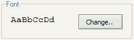

Aqui puedes cambiar la configuracion de IDE.
Estas listas establecen los colores de las diversas partes del editor.
Linea activa: un color de la linea donde esta el cursor.
Canal: un color del borde izquierdo del editor
Editor: un color del fondo del texto
El valor de profundidad de aspecto se utiliza al hacer una lista de constantes, etiquetas y variables al presionar Ctrl + [espacio]. El numero significa la cantidad de lineas que se escanean hacia arriba y hacia abajo desde la linea a la que llamo la lista. Si establece un numero de 0, el editor escanea todo el archivo de origen.
Ademas, puede establecer como se muestra la lista. Si la casilla 'Lista automatica' esta marcada, la lista se vuelve automaticamente despues de escribir simbolos @, $, #, etc.
Hay las opciones de editor comunes.
Mostrar panel principal: puede mostrar u ocultar la barra de herramientas principal.
Mostrar informacion del codigo de operacion: al seleccionar esto, se hizo que el editor muestre diferentes tipos de informacion sobre el codigo de operacion actual en la barra de estado (el numero de parametros, la ID del modelo, el tipo de variable, etc.).
Numeros de linea: apareceran los numeros de linea en el canal izquierdo.
Mostrar el borde de la canaleta: al seleccionarlo, la canaleta izquierda tendra la linea del borde a la derecha. Desmarque esta casilla si desea aumentar visualmente el espacio del editor.
Cargue el ultimo archivo cerrado al inicio: al iniciar el programa se abrira el ultimo archivo cerrado.
Cargue todos los archivos cerrados: puede abrir todos los archivos cerrados al inicio. Esta opcion solo es valida cuando se marca el ultimo archivo cargado al inicio.
Confirme cuando salga: al cerrar el programa, debe confirmarlo. Esta hecho para evitar la salida ocasional del programa.

Aqui puedes elegir la fuente y sintonizarla. Sanny Builder solo admite fuentes de paso fijo. La linea AaBbCcDd muestra la configuracion actual.